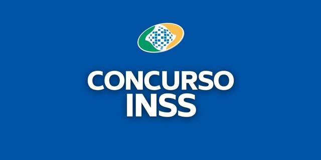

Insano Digital

Locais das provas do concurso do INSS serão divulgados nesta segunda-feira (21)

O Instituto Nacional do Seguro Social (INSS) vai divulgar os locais das provas objetivas do concurso público para mil vagas de técnico do seguro social na próxima segunda-feira (21). O certame será realizado na data provavel de 27 de novembro, às 14h, e terá duração de 3h30.
Para saber o local de prova, o candidato deverá acessar o endereço eletrônico http://www.cebraspe.org.br/concursos/inss_22, a partir do dia 21 de novembro e fazer a consulta individual.